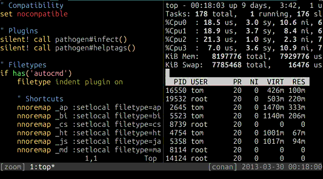

The recently released tmux 1.8 includes a new feature, zoomed panes, that allows temporarily expanding a pane to the full size of the tmux window to see more of its contents.
In the man page for tmux(1), the feature is described as follows, under the
details for the resize-pane command:
With -Z, the active pane is toggled between zoomed (occupying the
whole of the window) and unzoomed (its normal position in the
layout).
This command is bound to <prefix> z by default; for most users, this will
be Ctrl-a z. The effect can be observed by pressing this key sequence in any
window with at least two panes, to toggle the zoomed state for the active
pane:

Note the Z suffix that appears after the window title in the status bar while
the pane is zoomed.
For most users, the new feature should mean that any custom maximize/minimize style bindings they may be using are no longer needed. This works particularly smoothly given that the new release also includes support for reflowing text when panes and windows are resized, something GNU Screen has supported for some time.
Be sure to take a look at some of the other changes in the newest
release of tmux. If you’re using a DPKG or RPM based packaging system, you
might like to build it from source and install it with
checkinstall(8).